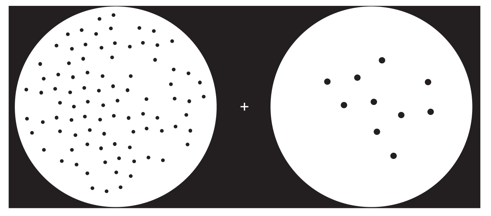
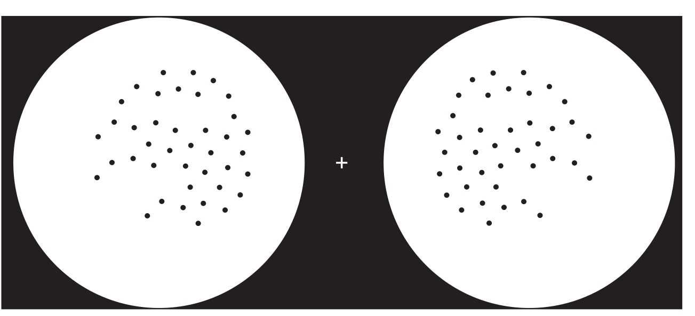

我提出数感的假设迄今已有15年。这个独特的假设认为，我们所拥有的数字直觉，即可以快速感知物品的大致个数的能力，是一种人类与其他动物共有的遗传能力。在经历了15年的严格审查之后，这个反常识的理论的现状如何呢？在我看来，出乎意料地好！目前数感被公认为是人类与动物能力的主要研究领域之一。有关数感的脑机制也不断得到越来越深入的剖析。在这一章，我将集中介绍这个快速发展的领域中最令人兴奋的一些发现。
做一个简单的演示，请盯着图10-1正中的“+”，图片的左侧是100个点组成的点阵，右侧是10个点组成的点阵。等待30秒后，翻到续图，再盯着图中的“+”。你会感觉到一个强烈的数量错觉，右边的点好像比左边的多。过一小会儿，错觉将会消失，真相随之出现，两侧是排列完全相同的40个点！无论经过怎样的处理，如改变点的大小、密度、形状或者颜色，错觉始终存在，似乎只有点的数量与错觉相关。这是数感的一个完美的例子。数字感知具有快速、自动及不受意识控制的特点，即使我们明白两边数量相同，眼睛或者说我们的大脑却会告诉我们相反的情况。这种错觉是大卫·伯尔（David Burr）和约翰·罗斯（John Ross）发现的，他们这样记录道：“正像我们能够直接感受到半打成熟的微红色樱桃的颜色信息一样，我们对于它的数量6也拥有直接的视觉感受。”1

首先注视上图中间的“+”30秒钟，然后继续注视续图（本书310页）中的“+”，试着判断左右两侧哪边的点更多。受到第一张图的影响，大脑里的数字系统已经适应了左侧数量多右侧数量少的情况，结果对第二张图的判断出现偏差，得到与事实相反的结论。
图10-1 数量错觉揭示数感的影响力和自动化

图10-1 数量错觉揭示数感的影响力和自动化（续图）
那么目前我们对于负责这种数字知觉的脑神经基础了解多少呢？